Сетевые технологии
Адресация IPv4 и IPv6. Двойной стек
Шихалиева Зурият Арсеновна
Российский университет дружбы народов, Москва,
Россия
20 ноября 2025
Основная цель
Изучить методы распределения IPv4/IPv6-адресов, разбиение сетей на
подсети и настройку двойного стека в виртуальной лабораторной среде.
Настройка двойного стека адресации IPv4 и IPv6
Топология стенда
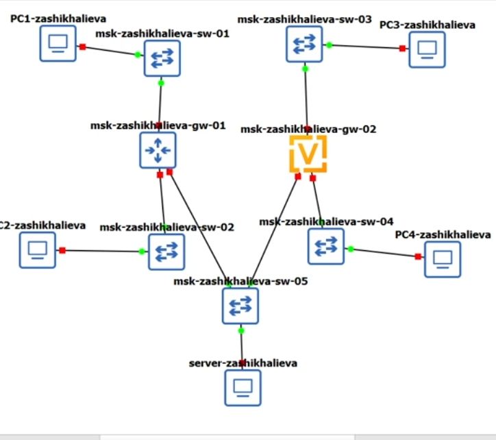
Топология
Конфигурация PC1
IPv4: 172.16.20.х
IPv6: автоматическое назначение SLAAC
Проверка командой show ip
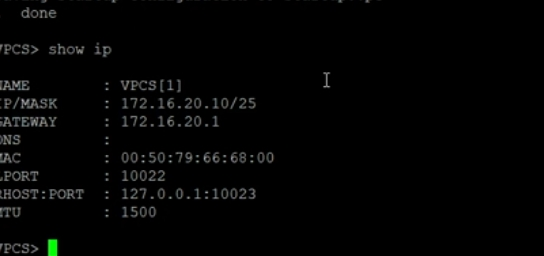
PC1
Конфигурация PC2
IPv4: из диапазона 172.16.20.128/26
IPv6: SLAAC
 PC2
PC2
Интерфейсы FRR
- eth0 — 172.16.20.1/25
- eth1 — 172.16.20.129/25
- eth2 — 64.100.1.1/24
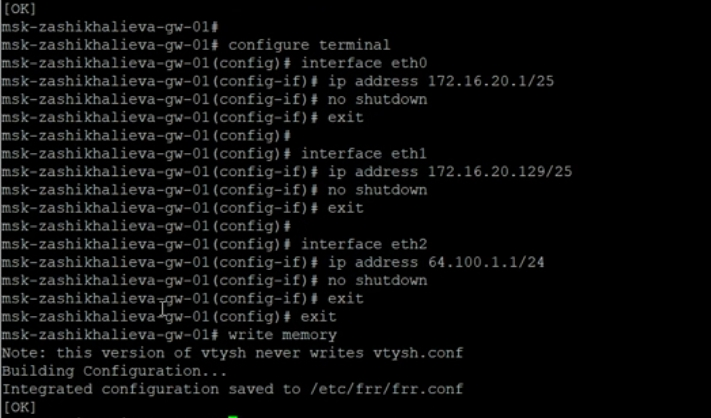
Настройка интерфейсов
Ping и трассировка
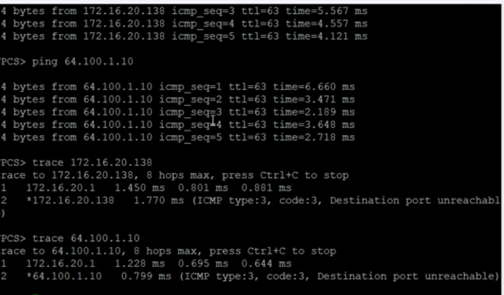
Ping PC1
 ARP
ARP
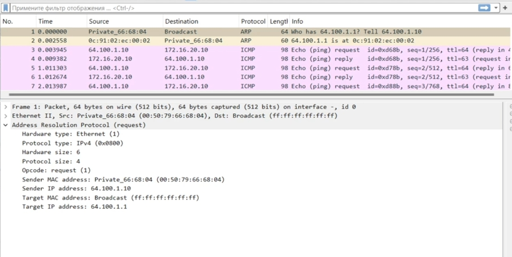
ICMP
PC3
Адрес: 2001:db8:c0de:12::/64
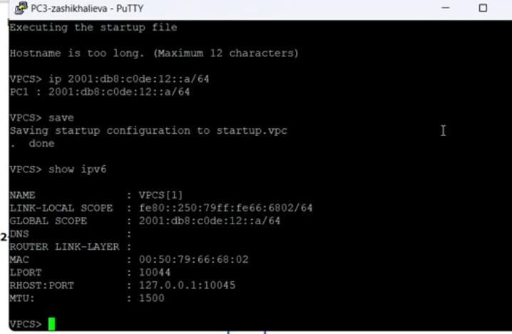
PC3
PC4
Адрес: 2001:db8:c0de:13::/64
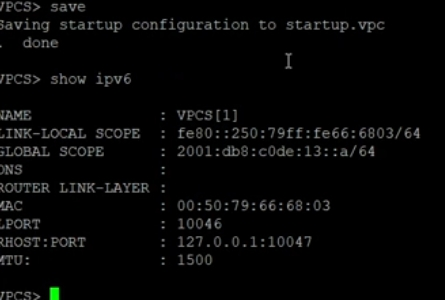
PC4
Сервер
IPv6: 2001:db8:c0de:11::/64
Двойной стек: IPv4 + IPv6
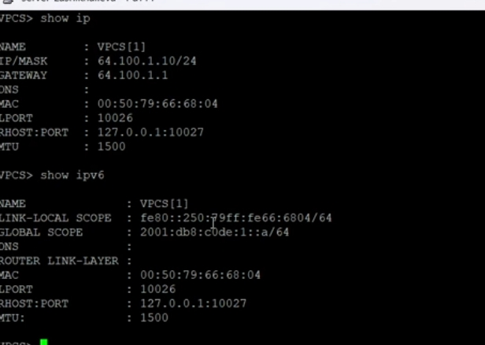
Server IPv6
Назначение адресов и RA
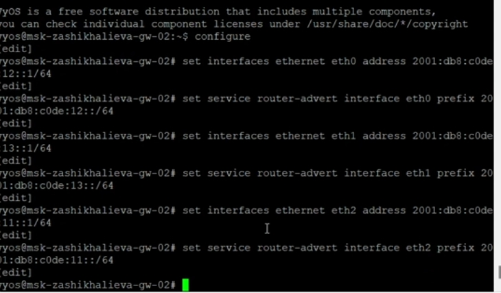
VyOS IPv6
Проверка интерфейсов
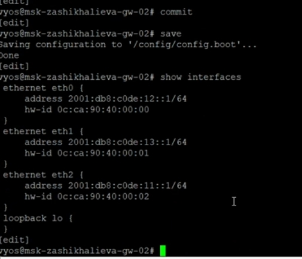
Interfaces VyOS
Ping PC4 → PC3 и Server
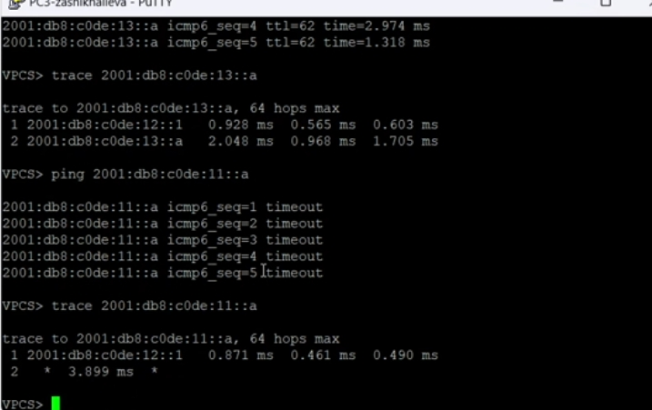
Ping PC4
ICMPv6-трафик
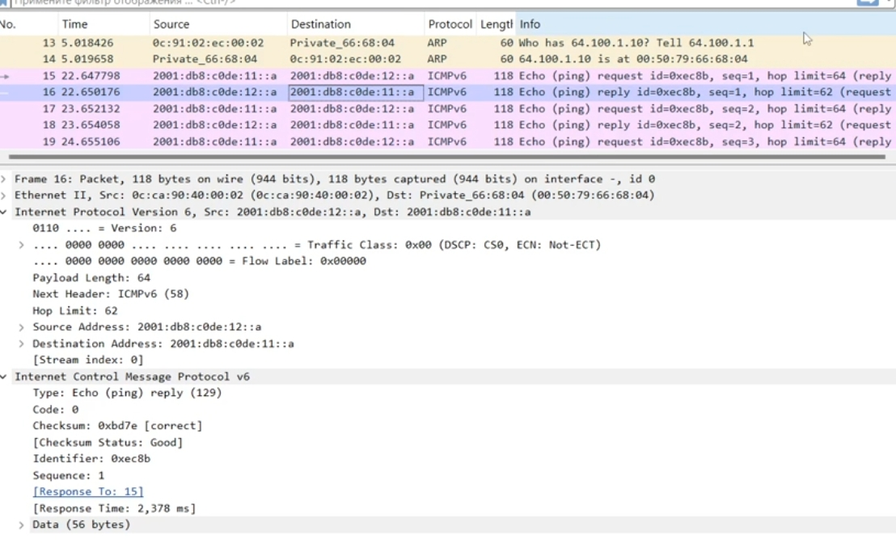
ICMPv6
Подсеть 1
- IPv4: 10.10.1.96/27
- IPv6: 2001:db8:1:1::/64
Подсеть 2
- IPv4: 10.10.1.16/28
- IPv6: 2001:db8:1:4::/64
Таблица адресов
| gw |
eth0 |
10.10.1.97 |
/27 |
2001:db8:1:1::1 |
/64 |
| gw |
eth1 |
10.10.1.17 |
/28 |
2001:db8:1:4::1 |
/64 |
| PC1 |
vpcs |
10.10.1.100 |
/27 |
2001:db8:1:1::a |
/64 |
| PC2 |
vpcs |
10.10.1.20 |
/28 |
2001:db8:1:4::a |
/64 |
PC1
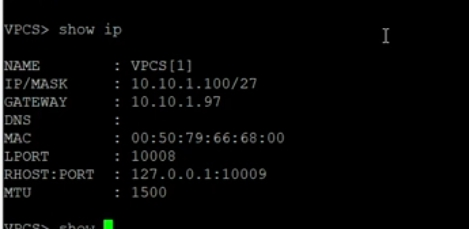
PC1 show ip
PC2
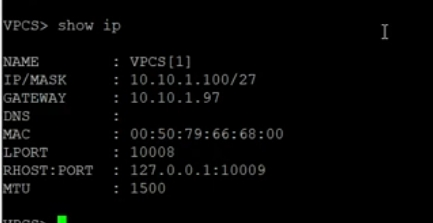
PC2 show ip
Топология
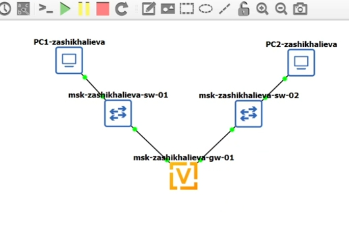
Топология
Настройка маршрутизатора
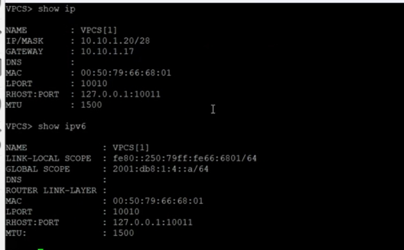
VyOS interfaces
Проверки
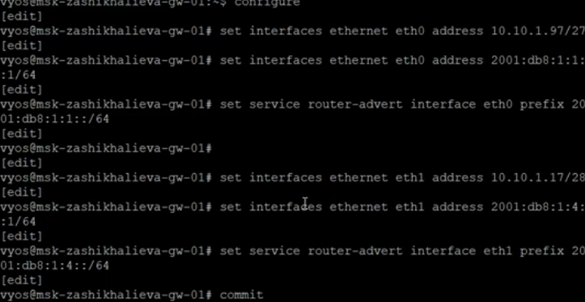
Ping PC1
Проверки
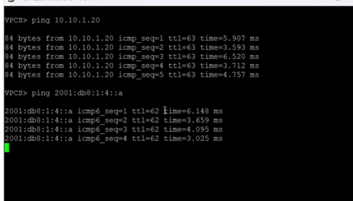
IPv6 ICMP
Основные результаты
- Выполнено детальное разбиение IPv4/IPv6-сетей
- Настроены двойные стеки на ПК и маршрутизаторах
- Проверена маршрутизация, ARP/ND, ICMPv4/ICMPv6
- Подтверждена корректная работа сетей и взаимодействие подсетей
только через маршрутизатор